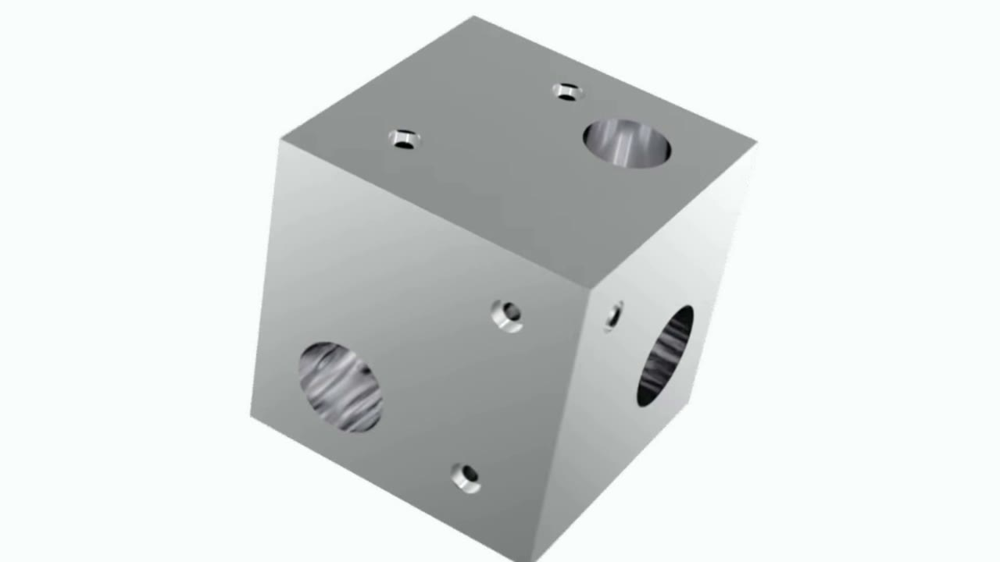
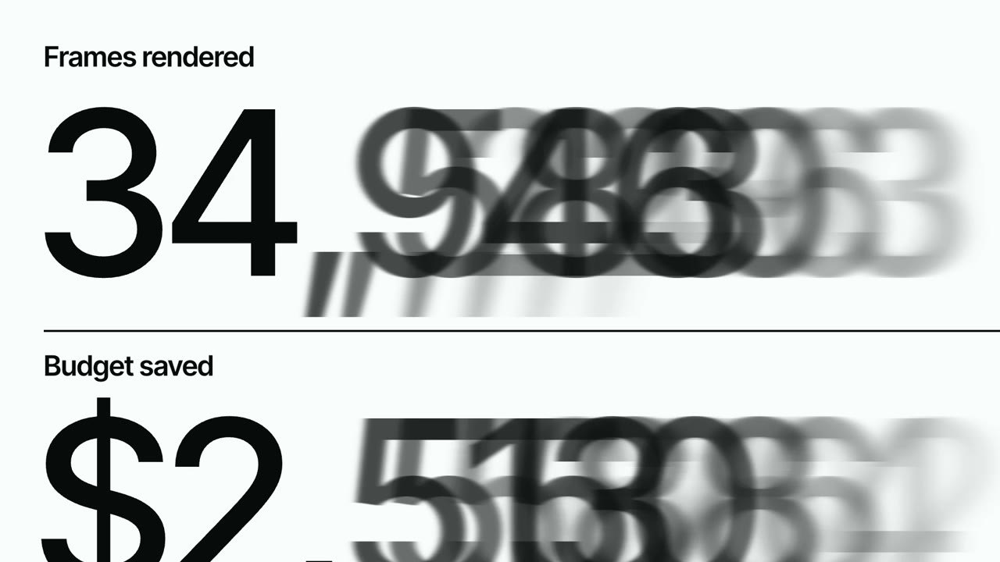
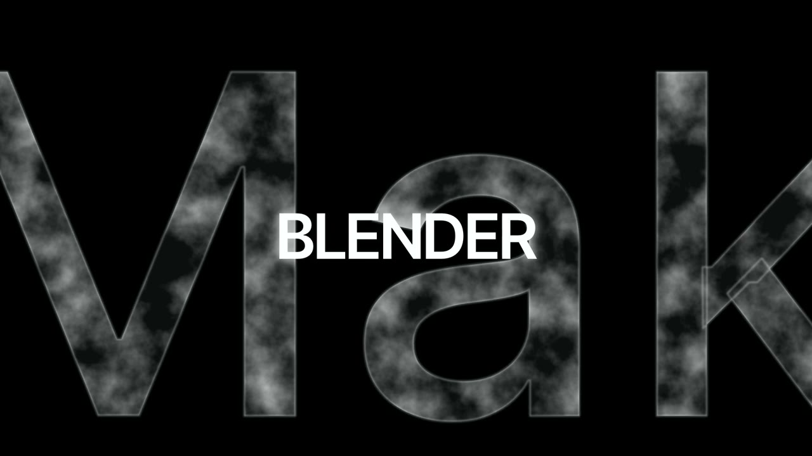
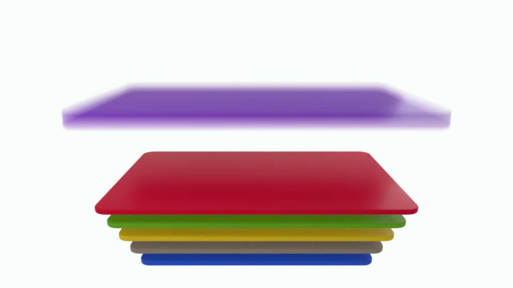
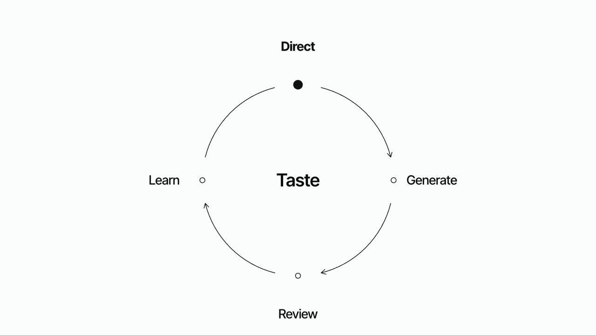
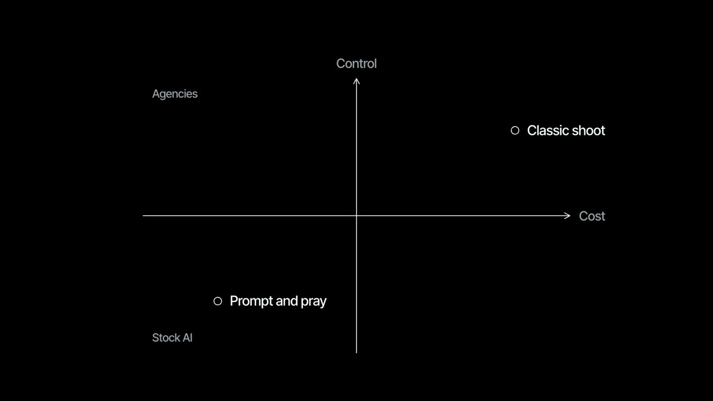
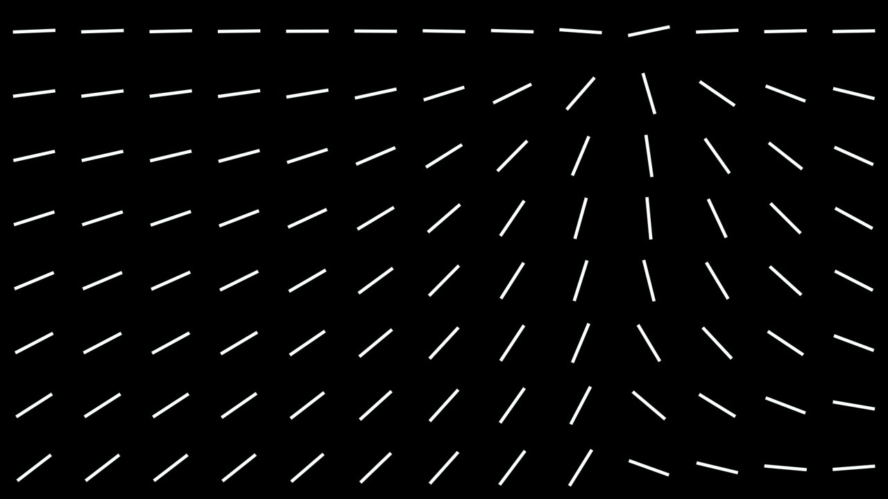
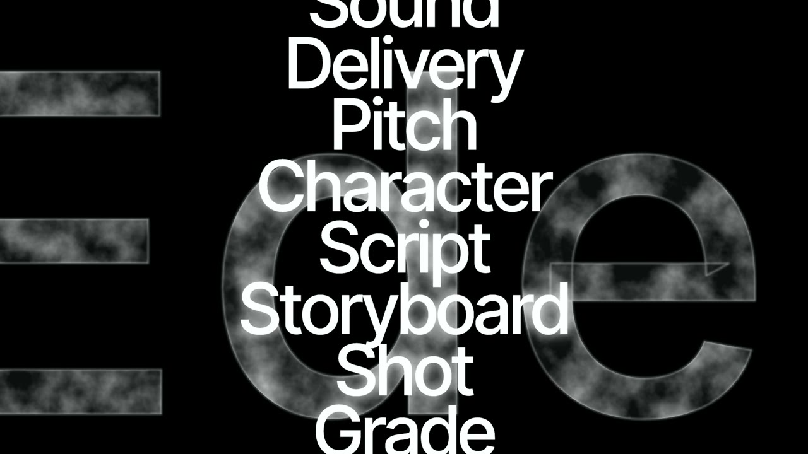

Motion design for agents, by Edenmakers
Give your agent an app or a company name. eden-motion writes the film, rebuilds the UI in code, shoots real 3D in Blender, cuts everything on the beat and measures every frame before you see it.
Made with eden-motion
No screen recording. The launcher UI was rebuilt as an HTML twin, so the type stays sharp at 3x zoom in 4K. A real Blender camera sweeps through it with depth of field, the Reels cut recomposes instead of cropping, and the b-roll shoots the TV like a product.
From a name and a few lines of notes
Research, script, voice, storyboard, Blender plates, sound and render in one run. No generated stills: type, product UI, diagrams and 3D.








Inside
Every step is plain JSON in a project folder, so an agent or a person can stop anywhere, change it and carry on.
Text judder under the camera push, measured on the render
How far a cut may move to land on the music's beat
Scenes in four styles, plus three Blender templates
An HTML twin of your UI instead of a screen recording, CG device shots in Blender, b-roll close-ups, a lens finish only on the fast moves and a 9:16 cut that keeps the composition.
blender: props render headless plates. layers-3d puts screenshots into real space for depth of field, rack focus and parallax.
Time stretches where things move fast, sub-frames are captured and averaged through a 180 degree shutter. Smear only where it belongs.
Voice, music, ambience and four SFX layers as stems. sync snaps cuts to the beat, one-shots land a frame early and pan with what makes them.
measure steps through every frame: reading time per line, text cut by the frame, ease tails that freeze, glyph judder.
Contact sheets, a phone-size test, frame strips around every cut and a calibrated rubric. It never ships the first render.
ref measures a film, compare puts yours next to it with SSIM, critique --against scores both the same way.
16:9, 4:5, 1:1 and 9:16. Portrait films are laid out on a larger stage and scaled down, so type stays supersampled.
Install
The agent checks your tools, installs what is missing and asks for API keys in a masked prompt in your own terminal, never in the chat.
/plugin marketplace add Eden-Makers/eden-motion /plugin install eden-motion@eden-motion > set up eden-motion > make a 40 second launch film for Linear, 4:5
# macOS, Node 20+, ffmpeg, Chrome git clone https://github.com/Eden-Makers/eden-motion cd eden-motion && ./install.sh eden-motion setup eden-motion new "Attio" --url https://attio.com --format 4:5
License
Source-available under the PolyForm Small Business License 1.0.0. Versions up to 0.3.0 stay available under Apache 2.0.
Individuals, freelancers, nonprofits and companies with fewer than 100 people and under 1M USD revenue last year.
Larger companies license eden-motion from Edenmakers. The same team directs and finishes films for brands in Prague.